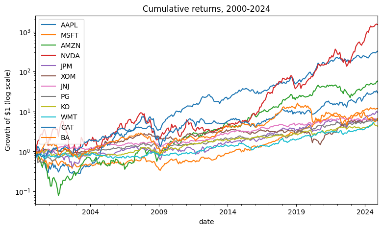
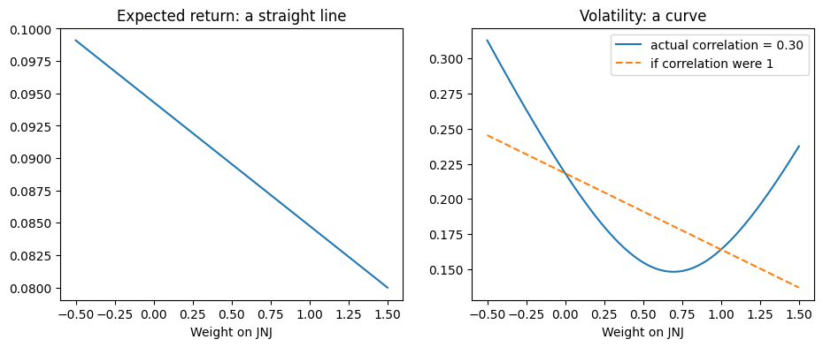
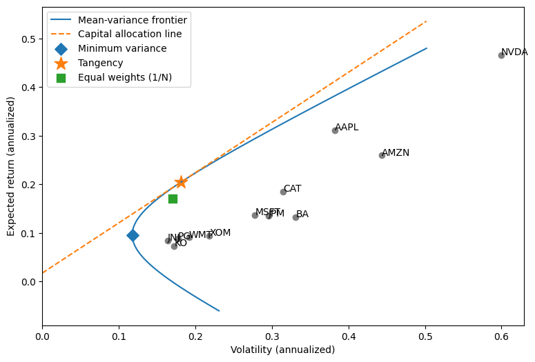
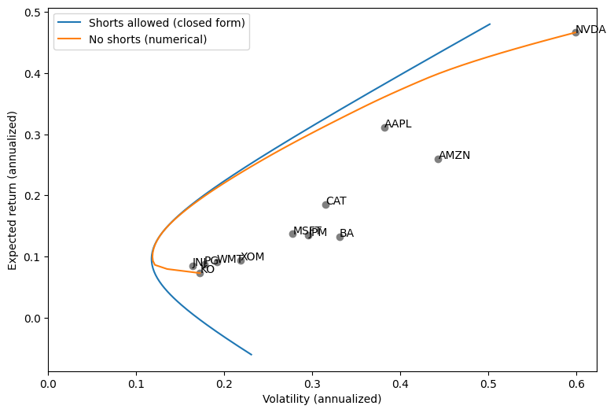
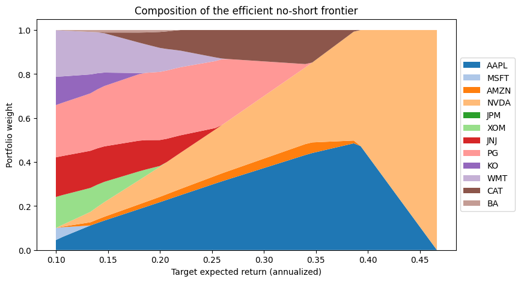
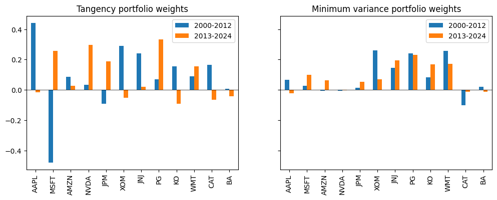

Portfolio Selection: Markowitz (1952)#
Each week in this course, we replicate the central result of a well-known finance paper. We start with the paper that started modern portfolio theory:
Markowitz, Harry. “Portfolio Selection.” The Journal of Finance 7, no. 1 (1952): 77-91.
Markowitz’s idea fits in one sentence: an investor should care about the mean and the variance of the return on the whole portfolio, not about each asset one at a time. The expected return of a portfolio is a weighted average of the expected returns of its assets. The risk of a portfolio is not. That gap is diversification, and this notebook measures it with real data.
The data are monthly returns from CRSP, the Center for Research in Security
Prices, which we access through Wharton Research Data Services (WRDS). The
file pull_crsp.py in this repository contains the exact queries that
produced the extract we load below.
import inspect
import matplotlib.pyplot as plt
import numpy as np
import pandas as pd
import mean_variance
import pull_crsp
The data#
Twelve large US stocks, monthly total returns (dividends included), 2000
through 2024. MKT is the CRSP value-weighted market return and RF is the
one-month Treasury bill rate.
df = pull_crsp.load_extract()
df.tail()
| AAPL | MSFT | AMZN | NVDA | JPM | XOM | JNJ | PG | KO | WMT | CAT | BA | MKT | RF | |
|---|---|---|---|---|---|---|---|---|---|---|---|---|---|---|
| date | ||||||||||||||
| 2024-08-31 | 0.032345 | -0.001116 | -0.045352 | 0.020082 | 0.056391 | 0.002476 | 0.058740 | 0.067057 | 0.085856 | 0.128324 | 0.028596 | -0.088458 | 0.022022 | 0.0048 |
| 2024-09-30 | 0.017467 | 0.031548 | 0.043866 | 0.017426 | -0.062011 | -0.006105 | -0.022911 | 0.009677 | -0.001683 | 0.045578 | 0.098343 | -0.124899 | 0.021040 | 0.0040 |
| 2024-10-31 | -0.030429 | -0.055659 | 0.000376 | 0.093215 | 0.058680 | -0.003754 | -0.013575 | -0.040701 | -0.091150 | 0.014861 | -0.034674 | -0.017956 | -0.007766 | 0.0039 |
| 2024-11-30 | 0.051708 | 0.044202 | 0.115290 | 0.041353 | 0.125270 | 0.018399 | -0.022558 | 0.085240 | -0.011407 | 0.128737 | 0.079506 | 0.041056 | 0.066560 | 0.0040 |
| 2024-12-31 | 0.055155 | -0.004629 | 0.055318 | -0.028577 | -0.040085 | -0.088081 | -0.067028 | -0.064766 | -0.028402 | -0.021093 | -0.106744 | 0.138703 | -0.031325 | 0.0037 |
stocks = df.drop(columns=["MKT", "RF"])
rf = df["RF"].mean()
summary = pd.DataFrame(
{
"mean (annualized)": 12 * stocks.mean(),
"volatility (annualized)": np.sqrt(12) * stocks.std(),
}
)
summary["Sharpe ratio"] = (summary["mean (annualized)"] - 12 * rf) / summary[
"volatility (annualized)"
]
summary.round(2)
| mean (annualized) | volatility (annualized) | Sharpe ratio | |
|---|---|---|---|
| AAPL | 0.31 | 0.38 | 0.77 |
| MSFT | 0.14 | 0.28 | 0.43 |
| AMZN | 0.26 | 0.44 | 0.55 |
| NVDA | 0.47 | 0.60 | 0.75 |
| JPM | 0.13 | 0.30 | 0.40 |
| XOM | 0.09 | 0.22 | 0.35 |
| JNJ | 0.08 | 0.16 | 0.41 |
| PG | 0.09 | 0.18 | 0.40 |
| KO | 0.07 | 0.17 | 0.32 |
| WMT | 0.09 | 0.19 | 0.38 |
| CAT | 0.19 | 0.31 | 0.53 |
| BA | 0.13 | 0.33 | 0.35 |
(1 + stocks).cumprod().plot(logy=True, figsize=(9, 5))
plt.ylabel("Growth of $1 (log scale)")
plt.title("Cumulative returns, 2000-2024");

Two assets: the mean is linear in the weights, the risk is not#
Put a fraction \(w\) of your wealth in asset 1 and \(1 - w\) in asset 2. Then
The expected return is a straight line in \(w\). The variance is a parabola, and the correlation \(\rho\) controls how far it bends. Unless \(\rho = 1\), some mix of the two assets has less risk than the weighted average of their risks.
a, b = "JNJ", "XOM"
mu_a, mu_b = stocks[a].mean(), stocks[b].mean()
sd_a, sd_b = stocks[a].std(), stocks[b].std()
rho = stocks[a].corr(stocks[b])
w = np.linspace(-0.5, 1.5, 201)
mean_p = w * mu_a + (1 - w) * mu_b
sd_p = np.sqrt(
w**2 * sd_a**2 + (1 - w) ** 2 * sd_b**2 + 2 * w * (1 - w) * rho * sd_a * sd_b
)
sd_if_perfectly_correlated = np.abs(w * sd_a + (1 - w) * sd_b)
fig, axes = plt.subplots(1, 2, figsize=(11, 4))
axes[0].plot(w, 12 * mean_p)
axes[0].set_title("Expected return: a straight line")
axes[0].set_xlabel(f"Weight on {a}")
axes[1].plot(w, np.sqrt(12) * sd_p, label=f"actual correlation = {rho:.2f}")
axes[1].plot(
w,
np.sqrt(12) * sd_if_perfectly_correlated,
linestyle="--",
label="if correlation were 1",
)
axes[1].set_title("Volatility: a curve")
axes[1].set_xlabel(f"Weight on {a}")
axes[1].legend();

The mean-variance problem#
With \(N\) assets, collect the portfolio weights in a vector \(w\), the expected returns in \(\mu\), and the covariances of returns in the matrix \(\Sigma\). The two formulas above become
Markowitz’s problem is to find, for each target expected return \(m\), the portfolio with the smallest variance:
The set of solutions, traced out as \(m\) varies, is the mean-variance frontier. Weights may be negative here: a negative weight is a short position.
The solution#
This problem has a closed-form solution. Define the scalars
Then the optimal weights and the minimized variance are
The variance is a parabola in \(m\), so in the usual picture, with volatility on the horizontal axis, the frontier is a hyperbola. Two portfolios on it have names.
The global minimum variance portfolio sits at the tip, where \(m = B/A\) and \(\sigma^2 = 1/A\): $\( w_{\text{GMV}} = \frac{\Sigma^{-1} \mathbf{1}}{\mathbf{1}^\top \Sigma^{-1} \mathbf{1}}. \)\( Notice that \)\mu$ does not appear. That matters later.
The tangency portfolio has the highest Sharpe ratio. Once investors can also hold a risk-free asset with return \(r_f\), it is the only portfolio of risky assets that any of them wants: $\( w_{\text{tan}} = \frac{\Sigma^{-1} (\mu - r_f \mathbf{1})} {\mathbf{1}^\top \Sigma^{-1} (\mu - r_f \mathbf{1})}. \)$
The derivation, which takes one Lagrangian and a page of algebra, is in the
appendix notebook, 02_markowitz_derivation.ipynb.py.
In code#
We estimate \(\mu\) and \(\Sigma\) with the sample mean and sample covariance.
mu = stocks.mean().values
Sigma = stocks.cov().values
ones = np.ones(len(mu))
w_gmv = np.linalg.solve(Sigma, ones)
w_gmv = w_gmv / w_gmv.sum()
w_tan = np.linalg.solve(Sigma, mu - rf)
w_tan = w_tan / w_tan.sum()
pd.DataFrame({"GMV": w_gmv, "Tangency": w_tan}, index=stocks.columns).round(3)
| GMV | Tangency | |
|---|---|---|
| AAPL | 0.047 | 0.242 |
| MSFT | 0.055 | -0.106 |
| AMZN | 0.003 | 0.040 |
| NVDA | 0.001 | 0.143 |
| JPM | 0.015 | -0.041 |
| XOM | 0.162 | 0.021 |
| JNJ | 0.187 | 0.136 |
| PG | 0.242 | 0.304 |
| KO | 0.121 | 0.012 |
| WMT | 0.221 | 0.146 |
| CAT | -0.063 | 0.085 |
| BA | 0.009 | 0.017 |
targets = np.linspace(-0.005, 0.04, 200) # monthly target means
frontier_vol = np.sqrt(mean_variance.frontier_variance(mu, Sigma, targets))
def annualized_mean_and_vol(weights):
return 12 * weights @ mu, np.sqrt(12 * weights @ Sigma @ weights)
mean_gmv, vol_gmv = annualized_mean_and_vol(w_gmv)
mean_tan, vol_tan = annualized_mean_and_vol(w_tan)
mean_ew, vol_ew = annualized_mean_and_vol(ones / len(ones))
fig, ax = plt.subplots(figsize=(9, 6))
ax.plot(np.sqrt(12) * frontier_vol, 12 * targets, label="Mean-variance frontier")
vol_grid = np.linspace(0, np.sqrt(12) * frontier_vol.max(), 50)
ax.plot(
vol_grid,
12 * rf + (mean_tan - 12 * rf) / vol_tan * vol_grid,
linestyle="--",
label="Capital allocation line",
)
ax.scatter(summary["volatility (annualized)"], summary["mean (annualized)"], color="gray")
for ticker, row in summary.iterrows():
ax.annotate(ticker, (row["volatility (annualized)"], row["mean (annualized)"]))
ax.scatter(vol_gmv, mean_gmv, marker="D", s=80, label="Minimum variance")
ax.scatter(vol_tan, mean_tan, marker="*", s=200, label="Tangency")
ax.scatter(vol_ew, mean_ew, marker="s", s=80, label="Equal weights (1/N)")
ax.set_xlabel("Volatility (annualized)")
ax.set_ylabel("Expected return (annualized)")
ax.set_xlim(left=0)
ax.legend();

No short sales: when the closed form runs out#
Look again at the weights above. Several are negative. Many investors cannot short, or cannot short cheaply, so the more realistic problem adds one more constraint:
This version has no closed-form solution. The reason is the inequality. At the optimum, some assets are held in positive amounts and the rest sit exactly at zero. If we knew in advance which assets were in which group, we could drop the zero-weight assets and apply the formula above to the rest. But we do not know, and the grouping changes as the target \(m\) changes. The frontier is stitched together from segments, one for each grouping, joined at “corner portfolios” where an asset enters or leaves. Markowitz (1956) worked out an algorithm to find those corners, the critical line algorithm. There is an algorithm, but no formula.
In practice we hand the problem to a numerical optimizer. It is a quadratic
program (a quadratic objective with linear constraints), which is about the
friendliest kind of optimization problem there is. Here is the function in
mean_variance.py that solves it:
print(inspect.getsource(mean_variance.minimize_variance))
def minimize_variance(mu, Sigma, target=None, allow_short=True):
"""Numerically solve for the minimum variance weights.
If `target` is None, there is no constraint on the mean, which gives the
global minimum variance portfolio. If `allow_short` is False, every weight
is constrained to be nonnegative.
"""
n = len(mu)
scale = 1 / np.mean(np.diag(Sigma)) # keeps the objective near 1 for the solver
constraints = [{"type": "eq", "fun": lambda w: w.sum() - 1}]
x0 = np.ones(n) / n
if target is not None:
spread = mu.max() - mu.min()
constraints.append({"type": "eq", "fun": lambda w: (w @ mu - target) / spread})
# Start from a portfolio that already hits the target: a mix of the
# lowest-mean and highest-mean assets.
share = (target - mu.min()) / spread
x0 = np.zeros(n)
x0[mu.argmin()] += 1 - share
x0[mu.argmax()] += share
result = minimize(
fun=lambda w: scale * w @ Sigma @ w,
jac=lambda w: 2 * scale * Sigma @ w,
x0=x0,
bounds=None if allow_short else [(0, None)] * n,
constraints=constraints,
method="SLSQP",
options={"ftol": 1e-12, "maxiter": 500},
)
w = result.x
# At the ends of the no-short frontier only one portfolio is feasible, and
# the solver reports that it cannot improve. Accept any feasible answer.
feasible = np.isclose(w.sum(), 1, atol=1e-8) and (
target is None or np.isclose(w @ mu, target, atol=1e-8)
)
if not (result.success or feasible):
raise RuntimeError(f"Optimizer failed: {result.message}")
return w
A constraint can never improve an optimum, so the no-short frontier must lie inside the unconstrained one. It also has endpoints: without shorting or leverage, no portfolio can have a higher expected return than the single best asset, or a lower one than the single worst.
targets_no_short = np.linspace(mu.min(), mu.max(), 60)
weights_no_short = mean_variance.frontier(mu, Sigma, targets_no_short, allow_short=False)
vol_no_short = np.sqrt([w @ Sigma @ w for w in weights_no_short])
fig, ax = plt.subplots(figsize=(9, 6))
ax.plot(np.sqrt(12) * frontier_vol, 12 * targets, label="Shorts allowed (closed form)")
ax.plot(np.sqrt(12) * vol_no_short, 12 * targets_no_short, label="No shorts (numerical)")
ax.scatter(summary["volatility (annualized)"], summary["mean (annualized)"], color="gray")
for ticker, row in summary.iterrows():
ax.annotate(ticker, (row["volatility (annualized)"], row["mean (annualized)"]))
ax.set_xlabel("Volatility (annualized)")
ax.set_ylabel("Expected return (annualized)")
ax.set_xlim(left=0)
ax.legend();

The composition of the no-short frontier shows the segments directly. Moving up the frontier toward higher expected returns, assets drop out one at a time until only the highest-mean stock is left.
efficient = targets_no_short >= weights_no_short[np.argmin(vol_no_short)] @ mu
fig, ax = plt.subplots(figsize=(9, 5))
ax.stackplot(
12 * targets_no_short[efficient],
weights_no_short[efficient].T,
labels=stocks.columns,
colors=plt.cm.tab20.colors, # twelve assets need more than the default ten colors
)
ax.set_xlabel("Target expected return (annualized)")
ax.set_ylabel("Portfolio weight")
ax.set_title("Composition of the efficient no-short frontier")
ax.legend(loc="center left", bbox_to_anchor=(1, 0.5));

The catch: the optimizer maximizes your estimation error#
Everything above treated \(\mu\) and \(\Sigma\) as known. They are estimates, and expected returns in particular are estimated very imprecisely. The optimizer does not know that. It leans hardest on whichever assets look best in the sample, which are disproportionately the ones whose means were overestimated. Michaud (1989) called mean-variance optimization an “error maximizer.”
To see it, estimate the tangency portfolio on the first half of the sample and again on the second half.
def tangency_weights(returns, rf):
w = np.linalg.solve(returns.cov().values, returns.mean().values - rf)
return pd.Series(w / w.sum(), index=returns.columns)
def gmv_weights(returns):
w = np.linalg.solve(returns.cov().values, np.ones(returns.shape[1]))
return pd.Series(w / w.sum(), index=returns.columns)
first, second = stocks.loc[:"2012"], stocks.loc["2013":]
fig, axes = plt.subplots(1, 2, figsize=(12, 4), sharey=True)
pd.DataFrame(
{"2000-2012": tangency_weights(first, rf), "2013-2024": tangency_weights(second, rf)}
).plot.bar(ax=axes[0], title="Tangency portfolio weights")
pd.DataFrame(
{"2000-2012": gmv_weights(first), "2013-2024": gmv_weights(second)}
).plot.bar(ax=axes[1], title="Minimum variance portfolio weights")
axes[0].axhline(0, color="black", linewidth=0.5)
axes[1].axhline(0, color="black", linewidth=0.5);

The tangency weights change sign from one half of the sample to the other. The minimum variance weights, which do not depend on \(\mu\), are far more stable. This is one reason that a naive equal-weighted portfolio is so hard to beat out of sample (DeMiguel, Garlappi, and Uppal, 2009). It is also one reason practitioners impose constraints like the no-short constraint even when they can short: a constraint limits how far the optimizer can chase estimation error.
It is also the first argument for the subject of this course. If a small change in the inputs can flip the answer, then a result is only as credible as your ability to say exactly which data, which code, and which software versions produced it, and to produce it again on demand. That is what a reproducible analytical pipeline gives you.
Your turn#
The minimum variance and tangency calculations above work, but they live in a
notebook: nothing checks them, and nothing else can import them. In HW 0 you
will move them into port_opt.py, where a set of unit tests verifies them
automatically every time you push to GitHub.
References#
DeMiguel, Victor, Lorenzo Garlappi, and Raman Uppal. “Optimal Versus Naive Diversification: How Inefficient Is the 1/N Portfolio Strategy?” The Review of Financial Studies 22, no. 5 (2009): 1915-1953.
Markowitz, Harry. “Portfolio Selection.” The Journal of Finance 7, no. 1 (1952): 77-91.
Markowitz, Harry. “The Optimization of a Quadratic Function Subject to Linear Constraints.” Naval Research Logistics Quarterly 3, no. 1-2 (1956): 111-133.
Merton, Robert C. “An Analytic Derivation of the Efficient Portfolio Frontier.” Journal of Financial and Quantitative Analysis 7, no. 4 (1972): 1851-1872.
Michaud, Richard O. “The Markowitz Optimization Enigma: Is ‘Optimized’ Optimal?” Financial Analysts Journal 45, no. 1 (1989): 31-42.